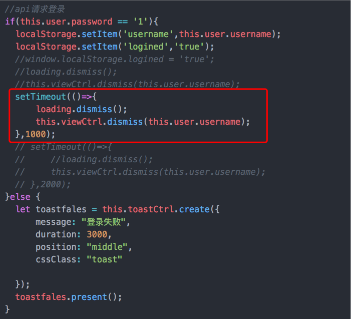
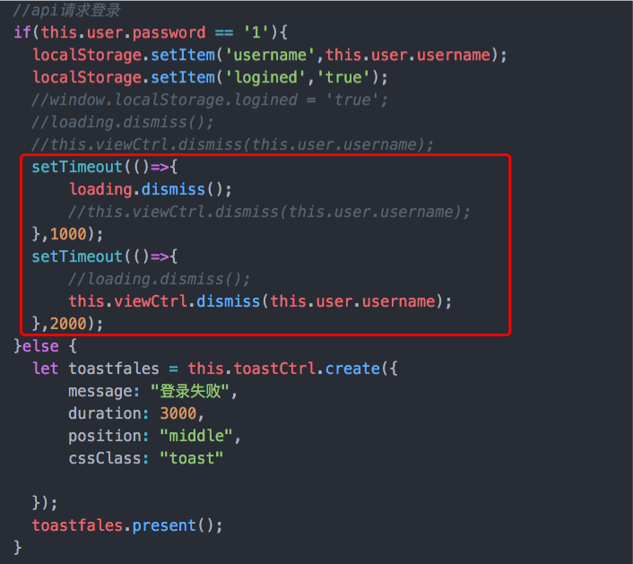
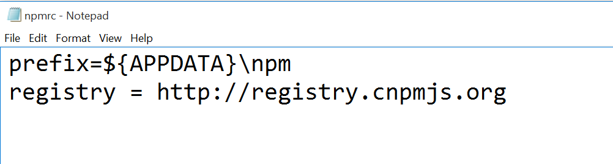
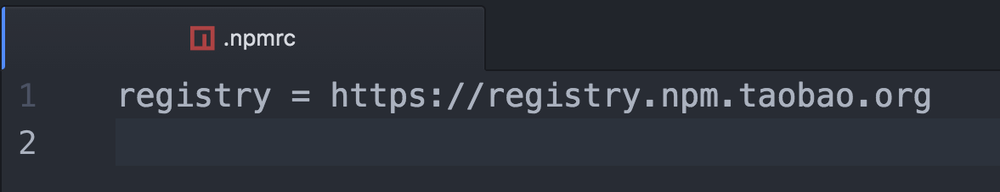

9.16
1. 获取DOM元素
用JavaScript获取DOM元素，需要等页面元素全部加载完毕才能使用，
但当在ionic的constructor(){}用document.getElementById()获取DOM元素时，取出来的都是null。
我们可以用platform的ready()方法。
1 | import { Component } from '@angular/core'; |
这个方法是当html的页面元素被加载完毕的时候才执行，
因此可以拿来获取DOM元素。
贴上原文文档
Returns a promise when the platform is ready and native functionality can be called. If the app is running from within a web browser, then the promise will resolve when the DOM is ready. When the app is running from an application engine such as Cordova, then the promise will resolve when Cordova triggers the deviceready event.
The resolved value is the readySource, which states which platform ready was used. For example, when Cordova is ready, the resolved ready source is cordova. The default ready source value will be dom. The readySource is useful if different logic should run depending on the platform the app is running from. For example, only Cordova can execute the status bar plugin, so the web should not run status bar plugin logic.
2. 修改元素的class属性
1. 修改所有的class属性
用新的class替换掉原有的所有class，可以设置className属性：
1 | document.getElementById("MyElement").className = "MyClass"; |
2. 为元素添加新的class
如果想添加一个新的class，并保留所有原有的class
1 | document.getElementById("MyElement").className += " MyClass"; |
3. 删除元素的某个class
如果要删除某个元素的单个class属性，而不影响其它class，可以使用正则表达式进行替换。
1 | document.getElementById("MyElement").className = |
4. 检查元素是否已经存在某class
1 | if(document.getElementById("MyElement").className.match(/(?:^|\s)MyClass(?!\S)/)){ |
9.7
1. ionic 生命周期函数
1 | onPageLoaded(){ //page初始化时 |
2. 实现日期时间选择器的方法
1. input
input标签 体验不太好。
1 | <input type="date"> |
2. datetime
日期选择器
1 | <ion-item> |
时间选择器
1 | <ion-item> |
3. 进入app跳转登录界面
通过localStorage来判断是否已经登录，若未登录则跳转登录界面。
不能使用创建Modal的方法进行跳转，而要使用NavController的push方法把登录页面push出来。
1 | constructor(private navCtrl: NavController, |
8.28
1. loading 和 Modal 一起dismiss()的问题
如果 lodaing 组件和 Modal 一起dismiss()，会出现Modal无法消失的情况。但是Modal依然可以向原页面传值。
而且即使Modal不dismiss()，Modal也会自动消失

ionic@beta.37的版本的 loading 不需要dismiss(),会自己消失，只要Modal.dismiss(data)就行，不然 loading.dismiss()会把Modal也消失。
这样写是可行的，但是还有各种问题。

8.25
1. 配置node环境
ionic需要node环境，但是不建议安装node v6.0.0 以上版本，有很多包会不支持。
2. 本地安装ionic
ionic安装需要翻墙，国内可以使用淘宝镜像cnpm，通过以下命令安装
npm install -g cnpm --registry=https://registry.npm.taobao.org
然后window在C:\Program Files\nodejs\node_modules\npm路径下加入的.npmrc中加入

1 | registry = http://registry.cnpmjs.org |

Mac的.npmrc则加入
1 | registry = http://registry.npm.taobao.org |
然后就可以用cnpm代替npm进行包的下载，默认从国内源下载包
但本人的Mac未在翻墙的情况下就成功安装了 ionic。